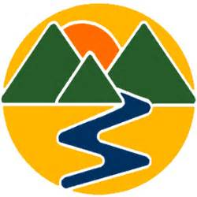
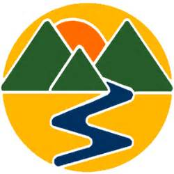
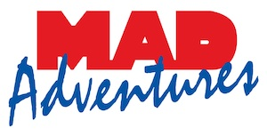
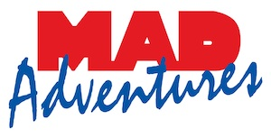
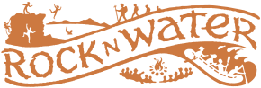
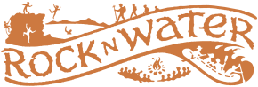
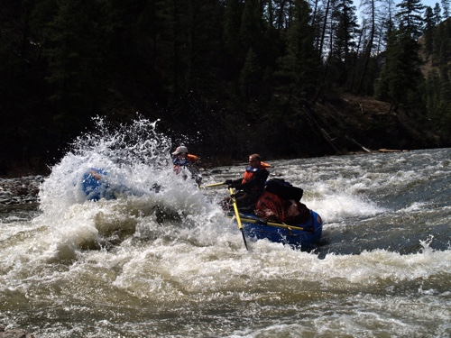
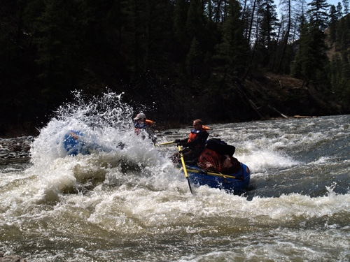
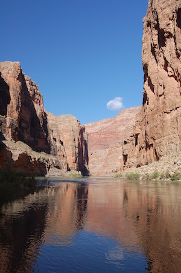
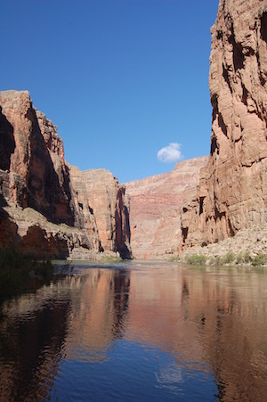

Dry Oar Content
This page has all the resources and content you will need for your first class project website. You are not required to use only these resources, if you would like to write your own content or find your own pictures you are welcome to. Please keep in mind that you must obey copyright laws! Do not use text content or images that you do not explicitly have rights to use. All images should be hosted (uploaded) into your Glitch project and not linked to from other websites.
Text Content
Each of the collapsed sections below contains text content for a page in your Glitch project website. This text content has very limited formatting. It will be your job to place the content into the correct spots in your project, add appropriate HTML elements, and CSS styling. You may have to write some of your own content. Make sure any content you add fits with the style and flow of the website.
We believe that there is nothing like a river trip for relaxing. That is why we subscribe to the dry oar philosophy of boating. Keeping your oars dry for us means taking time to look around and notice the beauty that surrounds the rivers we love. If your looking for more of an adrenaline rush adventure don't worry, we have trips suited for all experience and thrill levels.
Does a few hours of white water adventure excite you? How about a chance to cliff jump into the river from some of the most scenic parts of the wilderness? If your looking for a memorable river experience you've come to the right place! We have trips suited for all experience and thrill levels.
From a scenic float down the river to a heart pounding white water adventure, we guarantee we can provide you with a memorable experience. We invite you to come relax with us on one of the amazing rivers we visit. Check out our trips and let us know which one best suits you. We're waiting to hear from you!
Main Fork of the Salmon River, Idaho
Nestled deep in the Frank Church Wilderness of No Return winds the Salmon river. The Salmon was given the nickname long ago as the River of No Return by the people living near it because of the number of folks that came to visit and fell so in love with the rugged beauty of the river that they never left.
Herds of elk and deer graze on the hillsides around the river and bear and bighorn sheep are also commonly sighted. The river corridor is also lined with awe inspiring ponderosa pine which tower over the sandy beaches in the campsites and provide shelter from sun or rain when needed.
Let's not forget the rapids! They range from class I-IV. The Salmon is one of the longest undammed rivers in the United States. As a free flowing river the water is higher, faster, and colder in the early summer and lower, slower, and warmer in the late summer. There are good rapids all summer...but families with children who like to swim tend to appreciate the late summer's slower, warmer water more.
Desolation and Gray Canyon, Utah
Winding through canyons in central Utah, in some of the most desolate land anywhere, the Green river flows towards the mighty Colorado river and the sea. High grey stone cliffs, beautiful desert scenery, and great rapids have made this run famous. This 84-mile trip runs from from Sand Wash to Swaseys Rapid (just outside Green River Utah) and boasts outstanding scenery, interesting geologic formations, evidence of prehistoric and historic human activity, and great whitewater opportunities.
Desolation is rated a Class II/III and is usually done in 6 days. Desolation Canyon has been recognized as a National Landmark. This designation is based on the uniqueness and rich history that the canyon tells.
Grand Canyon, Arizona
This is the grand daddy of all canyons and the grand daddy of all river trips. You will never forget your visit to the Grand Canyon.
Grand Canyon river rafting combines world-class whitewater with breathtaking scenery to make one truly unforgettable river experience. The canyon is filled not only with exhilarating whitewater rapids, but with side canyons and ancient indian ruins accessible only by river.
CLASS I - X: The Grand Canyon uses a unique river rating scale. The rapids in the Canyon are technically rated I - X (1 - 10) to accommodate such a wide variety of rapids and river variances. However, most people are familiar with the regular I - V river rating scale, so we often refer to both.
Dry Oar started as a family operation 52 years ago. Today many of the original owners grandchildren and great grandchildren help operate the business and guide guests on the river. Over the years our family has also grown to include adopted family! We have made life long friends in many dedicated river guides who continue to come back year after year to keep the family business running.
What an incredible season we have had this past year. We celebrated our 50th year of running trips down the Grand Canyon. This year we ran 36 trips down the Grand Canyon introducing over 800 people to one of our favorite places on earth. We trained 4 new guides and welcomed them to our family. The season started off with some chilly weather in the early season, but our guests braved the cold and loved every minute of their trip [show pictures]. Later the temperatures soared reaching highs of 120 F in the Grand canyon and 95 on the Salmon. We didn't have any trouble getting people in the water at those temperatures.
- Is this a good trip for kids? What are the age ranges you allow?
- Absolutely this is a good trip for children of all ages. We have found however that children over the age of 8 seem to enjoy it more overall (And parents especially enjoy it more if their children are all over 8). A common concern we get from parents is that their children will be bored stuck on a boat for hours at a time. Surprisingly we deal with very few bored children of any age. The areas we are rafting through are some of the most beautiful in the world, and you never know what you might see around any corner. Not to mention the rapids which keep things very interesting. Each boat also comes equipped with a guide. It has been proven that river guides are unable to go for very long at all without telling stories...some of which are even true!
- Is whitewater rafting safe? I don't even know how to swim! Can I still come?
-
As with all adventure sports, there is an inherent and assumed
element of risk. To help ensure your safety, our guides are all
certified in Wilderness First aid and all start with at least 3
years of rafting experience. The most common injuries are sunburns
and injuries that occur on land.
Everyone on commercial rafting trips wears coast guard approved life vest or personal flotation device (PFD). Many non swimmers go on rafting trips and have a great time. Your guide will give you an in depth and engaging safety talk before your trip begins explaining what you should prepare for and do in the event that you fall out of the raft. - What is included in the trip?
-
We will provide all necessary camping equipment. This includes a
sleeping bag, foam pad, waterproof duffle bag, small waterproof
day bag, tent and a cot, eating utensils and camping chair.
We provided water and lemonade during the day. Coffee, tea and hot chocolate are provided during the morning and evening hours. You may bring beer, liquor and soft drinks (in reasonable amounts, 2 cans per day). You may purchase these items either the night before the trip, or on your way to the put-in. 3 meals per day, plus snacks - What do I need to bring?
- The most effective way to plan for temperature and weather changes in the Canyon is to be prepared for both hot & dry and cold & wet Rain jacket and rain pants- do not bring ponchos Quick dry shirts and shorts long sleeve cotton shirt and pants- helps keep you cooler on hot days. Button down shirts provide more sun protection on the neck Light Weight Cotton Pant, Nylon Pant or Sarong the best thing for men to wear are swim trunks as shorts if you are cold natured, bring polypropylene long underwear top and bottom Women wear swim suits or quick dry underwear and sport bras as a base layer during the day. Over the base layer, wear a pair of quick dry shorts and the shirt of your choice (polypropylene if you are cold, cotton if you are hot). Two piece swim suits are convenient when changing or going to the bathroom. hat- large brim hat offers protection from the sun with a good quality strap. Sunglasses with strap socks- used for hiking and to protect your feet from the sun. sandals or water shoes- if not used to hiking in these, bring a pair of shoes you have hiked in before camper wear: Bring something comfortable to wear around camp. Cotton dresses, skirts and sarongs are all popular options. Sleep wear: You might choose to sleep in your camp wear. Otherwise, you might like to bring something comfortable to sleep in. water bottle small day pack for hikes moisturizing lotion headlamp or flashlight moleskin waterproof sunscreen and lip balm optional items: gloves fleece jacket towel bandana small pillow hygiene products: toothpaste, toothbrush, tissue, nail clippers, feminine hygiene products, extra eyeglasses or contacts, biodegradable soap and shampoo camera equipment book, watercolors, journal and pen
- What is so great about whitewater rafting anyway?
-
Are you kidding me! What's not great about whitewater
rafting!...Let's describe a common day on the river.
Arise in the soft light of the early morning after a night spent sleeping under a beautiful starry sky. Have a hearty warm breakfast of fresh blueberry pancakes or omelets to order, then pack your things and prepare for the day. The day is filled with some combination of swift water, rapids, calms, hikes, history, geology, stories, and more good food. We try to hit camp around 4 or 5, after setting up your cot you can relax with a good book or good company by the river, or explore around camp while your guides prepare your dinner...something perhaps like steak and potatoes, or grilled salmon...and dutch oven brownies...you won't forget the dutch oven brownies. After dinner it's more relaxing, and you might even be able to talk your guide into another story or two to send you off to bed under more stars than you thought were possible. - How far in advance should I book my trip?
- If you have specific dates you need, we recommend booking a year in advance. If you can be more flexible 6 months in advance is usually sufficient.
Images
Below is a mix of logo and company images you can use in your Glitch project website. Feel free to pick and choose what you feel is best for your websites design. Remember that these images need to be uploaded into Glitch. You can download an image by right clicking on it and choosing download image; or some other similar option depending on your operating system.
You can also download a ZIP of all these images if you like. The Download is almost 6 megabytes so do not download it if you have a slow internet connection or data limits.


 



 



 



 



 



Compiled: 2021-02-01 @ 16:51:30